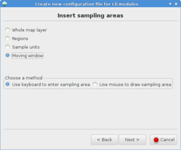

DESCRIPTION
The g.gui.rlisetup is a wxGUI
component which allows the user to create a configuration file
for the analytical r.li modules. For a general introduction, see
the r.li overview.
The configurations are raster map independent, it means that you can use
a file created on a raster map for analyze any other you have.
The program is completely interactive and uses a GUI to help you
in your choices.
Analysis methods
Definition of creation of sampling area:
- Whole map layer: use entire area selected above,
- Regions: select one to many subareas via mouse,
- Sample units: automated selection of sampling area (for details see below)
- Random nonoverlapping,
- Systematic contiguous,
- Systematic noncontiguous,
- Stratified random,
- Centered over sites (vector points).
- Moving window: rectangular or circular with size

Definition of region for analysis:
- Whole map layer: entire map (current region),
- Keyboard setting: based on keyboard selection for region definition,
- Draw the sampling frame: based on interactive region selection via mouse.
Usage details
The startup window shows your configuration files, you can:
TODO: description below needs further updates
- View/Edit (Load a file) from the shown list: the
configuration is shown in a small text editor window.
Configuration files are saved in the folder
C:\Users\userxy\AppData\Roaming\GRASS7\r.li\ (MS-Windows) or
$HOME/.r.li/ (GNU/Linux) (the file name can be
defined by the user). The output or an analysis can either be a new raster
map (in case of using a "moving window" analysis) or be an ASCII text file
(when not performing a "moving window" analysis) containing the result.
Such text file will be saved in the folder
C:\Users\userxy\AppData\Roaming\GRASS7\r.li\output\
(MS-Windows) or $HOME/.grass7/r.li/output/ (GNU/Linux).
All dimensions are percentages of raster rows or columns.
- Create a new configuration file: used for creating
a new configuration file in an interactive way, in three steps:
- Choose file name and maps to use for setting:
- Name for new configuration file(required): the name
of new configuration file
- Raster map name to use to select areas (required):
the name of raster map used for selecting sampling areas
- Vector map to overlay (optional): name of a
vector map used for selecting sampling areas
- Set the sampling frame. The sample frame is a rectangular area
which contains all the areas to analyze. It can be defined in three
ways:
- Whole map layer: the sample frame is the whole map
- Keyboard setting: the user enters the coordinates in
cells of upper left corner of sampling frame and its length in
rows and columns.
- Draw the sample frame: the user draws the sample frame
on map using mouse.
- Set the sample areas. The sample areas are simply the areas to
analyze. They can be defined in five ways (see the picture below):
- Whole map layer: the sample area is the whole sample
frame
- Regions: the user enters the number of areas and then
draws them using mouse.
- Sample units: they are areas of rectangular or circular
shape. The user can define them using keyboard or mouse.
- keyboard: the user define the shape of sample unists and
their disposition:
- Random non overlapping: the user specifies
the number of sample units and they are placed in a
random way at runtime. It is guaranteed that the
areas do not intersect themselves.
- Systematic contiguous: the defined sample
is placed covering the sample frame, side by side
across rows.
- Systematic non contiguous: the same as above,
but here ever rectangle is spaced from another by
a specified number of cells.
- Stratified random: the sample frame is
divided in n strats of rows and m strats of columns
(n and m are given by user), then the specified
number of sample areas are placed in a random way,
one for every m*n areas defined by strats.
- Centered over sites: the sample areas
are placed into sample frame centering them on points
in site file.
- mouse: the user chooses the shape and then draws the
specified number of sample areas on map.
- Moving Window: the user defines a rectangular or
circular area, it is moved over all the raster increasing only
of a cell for every move(in columns if possible, if not in rows).
It produces a new raster containing the result of all analysis.
- Select areas from the overlaid vector map:
the sample areas are defined by the vector map selected above.
For every cat in vector map, the procedure prompts the
user if they want to include it as sample area.
The resulting configuration file can be used only with the
specified raster map, and the procedure can be used only if
whole map layer is selected as sampling frame.
- Remove a file the selected file is deleted from the
available configuration files.
- Help: open this help text.
- Close module window.
NOTES
Configuration files are raster map independent because areas are saved using
relative coordinates.
Screenshots of the wizard window frames:

g.gui.rlisetup: First frame of wizard for selecting
existing configuration files or creating a new one
|

g.gui.rlisetup: Frame for selecting maps
|

g.gui.rlisetup: Frame for inserting sampling areas
|

g.gui.rlisetup: Frame for defining rectangular moving window
|

g.gui.rlisetup: Frame for defining circular moving window
|

g.gui.rlisetup: Frame for choosing the sampling frame with keyboard
|

g.gui.rlisetup: Frame for drawing the sampling frame
|

g.gui.rlisetup: Summary frame before saving
|
EXAMPLES
Moving window analysis on full region
TODO: update examples to new g.gui.rlisetup dialog:
Example for a 7x7 moving window analysis on full region, the output
is a raster map:
Click on "New", then:
- Configuration file name: "movwindow7"
- Raster map name to use to select areas: "forests"
1. Setup sampling frame:
- Define a sampling frame (region for analysis): "Whole map layer", then "OK"
2. Setup sampling frame
- Define sampling areas: "Moving window", then "OK"
- Then click on "Use keyboard to define moving window dimension"
Select type of shape:
- [x] Rectangular
- Width size (in cells)?: "7"
- Height size (in cells)?: "7"
- Then "Save settings"
3. Save settings: click on button
(4.) Close
Now an anaysis can be performed using one of the analytical modules, e.g.
g.region raster=forests -p
r.li.patchdensity input=forests conf=movwindow7 output=forests_p_dens7
r.univar forests_p_dens7
See the respective modules for further examples.
Whole region analysis
Example for a whole region analysis, the output is a text file:
Click on "New", then:
- Configuration file name: "whole_region"
- Raster map name to use to select areas: "lsat7_2000_40"
1. Setup sampling frame:
- Define a sampling frame (region for analysis): "Whole map layer", then "OK"
2. Setup sampling frame
- Define sampling areas: "Whole map layer", then "OK"
3. Save settings: click on button
(4.) Close
Now an anaysis can be performed using one of the analytical modules, e.g.
g.region raster=lsat7_2002_40 -p
r.li.shannon input=lsat7_2000_40 conf=whole_region output=lsat7_2000_40_shannon
See the respective modules for further examples.
SEE ALSO
r.li - package overview
r.li.daemon
Old r.le suite manual (1992)
wxGUI
wxGUI components
REFERENCES
McGarigal, K., and B. J. Marks. 1995. FRAGSTATS: spatial pattern
analysis program for quantifying landscape structure. USDA For. Serv.
Gen. Tech. Rep. PNW-351. (PDF)
AUTHOR
Luca Delucchi
Rewritten from r.li.setup by Claudio Porta and Lucio Davide Spano